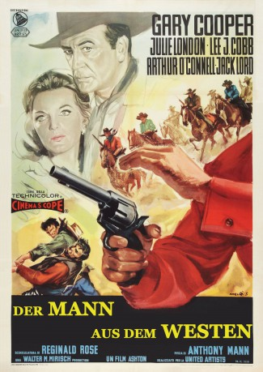

#2046 Der Mann aus dem Westen
Alternativ: Man of the West
 
 IMDB-Wertung: 7.2 / 10
IMDB-Wertung: 7.2 / 10  Metascore: 0
Metascore: 0 
Als der Zug, in dem auch der ehemalige Outlaw Link Jones mitfährt, ausgeraubt wird, kommt es zur unvermuteten Wiederbegegnung mit seiner alten Gang. Dock Tobin, der sadistische und halbverrückte Anführer, hatte Link vor zwanzig Jahren wie seinen Sohn behandelt und will ihn nun wieder in seine Bande zwingen. Um zu überleben, muss Link sein früheres Leben wieder aufnehmen - sein Leben als Killer. Was einmal seine Familie war, wird nun seine Hölle...
Jahr: 1958
Dauer: 100 Minuten
FSK: 12
Land: USA Studio: United ArtistsTonspuren:
Untertitel:
Auflösung: 1080p (1920x816) Größe: 8140 MB
Genre: Drama, Western, Liebe
Regisseur: Anthony Mann
Drehbuch: Will C. Brown, Reginald Rose
Soundtrack: Leigh Harline
Darsteller:
 Gary Cooper als Link Jones
Gary Cooper als Link Jones- Julie London als Billie Ellis
 Lee J. Cobb als Dock Tobin
Lee J. Cobb als Dock Tobin Arthur O'Connell als Sam Beasley
Arthur O'Connell als Sam Beasley- Jack Lord als Coaley
 John Dehner als Claude
John Dehner als Claude Royal Dano als Trout
Royal Dano als Trout Robert J. Wilke als Ponch
Robert J. Wilke als Ponch Frank Ferguson als Crosscut Marshal , uncredited
Frank Ferguson als Crosscut Marshal , uncredited- Joe Dominguez als Mexican Man , uncredited
 Dick Elliott als Willie , uncredited
Dick Elliott als Willie , uncredited Herman Hack als Train Passenger , uncredited
Herman Hack als Train Passenger , uncredited- Signe Hack als Train Passenger , uncredited
- Ann Kunde als Train Passenger , uncredited
 Tom London als Tom , uncredited
Tom London als Tom , uncredited- Tina Menard als Juanita , uncredited
 Emory Parnell als Henry , uncredited
Emory Parnell als Henry , uncredited Chuck Roberson als Rifleman-Guard on Train , uncredited
Chuck Roberson als Rifleman-Guard on Train , uncredited- Glen Walters als Train Passenger , uncredited
 Guy Wilkerson als Train Conductor , uncredited
Guy Wilkerson als Train Conductor , uncredited- Jack Williams als Alcutt , uncredited
Datei: X:\HD-Western-1900-1959\Mann aus dem Westen, Der (1958, FSK12, 1920x816).mkv seit 25.09.2015
Festplatte: HD Eastern+Western
 Es gibt insgesamt 98 Filme in der Gruppe 'HD-Western-1900-1959'
Es gibt insgesamt 98 Filme in der Gruppe 'HD-Western-1900-1959'